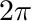
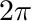

A point source is a special case of an isotropic source . Due to its simplicity, it provides a good example for discussing the implementation of a new source class.
The point source header file egs_point_source.h includes the base source header file, the header file of the EGS_Vector class to gain access to the methods manipulating 3D vectors, and the random number generator (RNG) header file to get access to the declaration of the various RNG methods needed to sample particles
EGS_POINT_SOURCE_EXPORT that will be used to mark DSO symbols as exports when building the point source DSO and as imports when linking against the DSO: We derive the point source class from EGS_BaseSimpleSource instead of EGS_BaseSource because a point source is a "simple" source (i.e consists of a spectrum and an energy-independent probability distribution for position and direction):
The private variablesxo (point source position) and valid will be set in the constructors (see below). We provide two methods for constructing a point source: directly by passing a charge, a spectrum, a source position and a name to the constructor, and from the information provided by an EGS_Input object The main method that must be implemented in a derived simple source class is getPositionDirection() to sample the position and direction of a single particle and to set its statistical weight
 between 0 and  and sets :
between 0 and  and sets : The next function to implement is getFluence(), which should return the particle "fluence" emitted so far by the source. We arbitrarily decide to define the "fluence" of our point source to be the number of particles emitted by the source (we also could have picked the number of particles per unit solid angle or real fluence at a certain distance from the source) and therefore the getFluence() implementation is very easy:
count is a protected data member inhereted from EGS_BaseSimpleSource, which is initialized to zero in the simple source constructor and is incremented by one in each invocation of the getNextParticle() function.
The next task is to implement the functions that store the state of a point source object to a data stream and restore the state from a data stream. This is needed for the ability to restart simulations. Because our source class is very simple, no data needs to be stored/restored in addition to the data already stored/restored by EGS_BaseSource and EGS_BaseSimpleSource. The implementation of these functions is therefore extremely simple:
The next step in the header file is to provide a isValid function, which should return true, if the source object is valid and false otherwise (e.g. it does not have a spectrum). isValid() is needed so that the createSource() function that must be provided by the source DSO (see below) can be implemented by simply using the template createSourceTemplate():
The final step in the point source declaration is to specify a protected function that will be used to set up the source type and description
The egs_point_source.cpp file provides implementation of the constructor that creates a point source object from information stored in an EGS_Input object, the setUp() function and the C-style source creation function createSource() that must be provided by each source DSO. It includes the point source header file and the input object header file
The point source constructor calls the base simple source constructor passing the input as argument
name key, sets the charge from a charge key and constructs the spectrum from the information in a spectrum composite property using EGS_BaseSpectrum::createSpectrum(). The only task remaining for a complete point source definition is to determine the position of the source: err=0 and the number of inputs to the position key is exactly 3 (defining a 3D position), otherwise a warning is issued and the source is set to be invalid: The source type and description is then set using setUp().
The implementation of the setUp function sets the type string to "EGS_PointSource" and the description string to a short sentence constructed from the charge and spectrum type:
The createSource C-style function implementation simply uses the createSourceTemplate() function:
- The source provides a constructor that takes pointers to an EGS_Input object and an object factory as arguments
- The source provides a
isValid() function returning a boolean value.
This completes the implementation of our point source class.
The Makefile is very similar to the Makefile of a geometry DSO (see e.g. this example): we include the egspp config setting for the make system,
BUILD_POINT_SOURCE_DLL macro, We can now build our point source DSO by typing make and use it for simulations by including input such as
:start source:
library = egs_points_source
name = some_name
charge = -1
:start spectrum:
definition of a spectrum
:stop spectrum:
position = 15 -3 7
:stop source:
in the source definition section of the input file.
This is the complete Makefile:
This is the complete header file:
This is the complete source file: